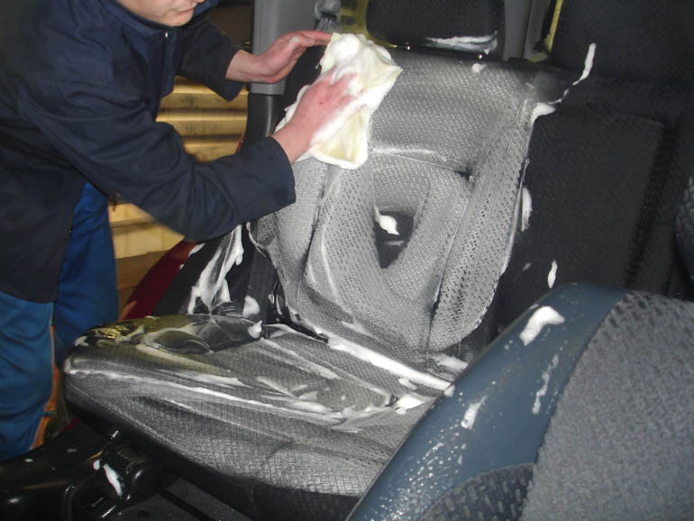
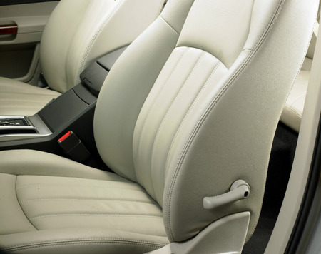
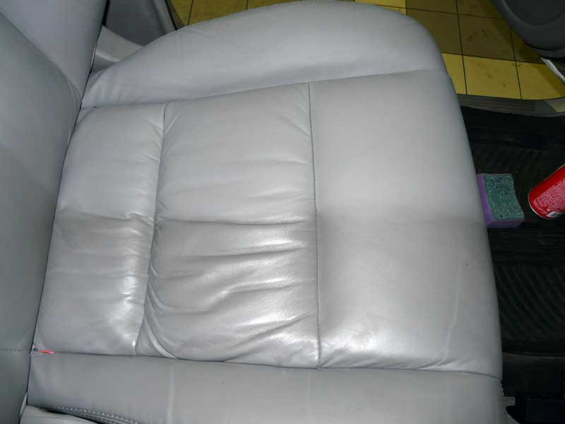
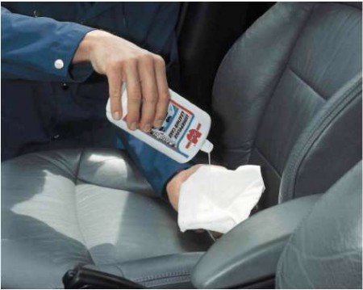

Кожаным сиденьям в автомобиле необходим регулярный уход. И хотя кожаные сиденья имеют высокую прочность и стойкость, со временем и при частой эксплуатации сиденья покрываются пылью и грязью, которые стирают кожу почти до гладкого состояния.
Это является основной причиной, почему следует подвергать кожаные сиденья регулярному уходу и чистке. И если, к примеру, ремонт Лексус, который лучше всего доверить профессионалам, вы производите в специализированных сервисах, то чистку сидений вполне можно провести своими силами.
Первое, что необходимо сделать при чистке кожаных сидений, это удалить с их поверхности загрязнения. Для этого рекомендуется использовать средства для чистки кожи, которые продаются в магазинах автозапчастей и аксессуаров. Но следует учесть, что в данном случае речь идет исключительно о средствах для ухода за кожей, которые ни в коем случае не должны делать её мягкой. Мягкая кожа растягивается, вследствие чего сиденья быстро потеряют свой привлекательный внешний вид. Кроме того, необходимо следить за тем, чтобы после обработки таким средством кожа не изменила свой цвет. Лучше всего проконсультироваться с продавцом или специалистом, прежде чем вы сделаете выбор в пользу того или иного средства для чистки ваших сидений. Кроме того, очень важно прочитать инструкцию по эксплуатации вашего автомобиля, и выполнять все приведенные в ней требования и советы. Салфетку лучше всего использовать из хлопчатобумажной ткани.
Если на коже сидений имеются трещины, значительные истирания или след от сигареты (но не сквозная дырка), то для восстановления хорошо подойдет специальная краска для кожи, которую тоже можно купить как в автомагазинах, так и магазинах кожаных изделий. Разумеется, при покупке необходимо подобрать максимально подходящий для ваших сидений оттенок. Но сделать это по памяти будет весьма непросто. Поэтому лучше всего, если вы поедете за краской на вашем автомобиле, чтобы прямо на месте подобрать цвет и оттенок.
При использовании краски также соблюдайте инструкцию по использованию краски, что поможет вам скрыть некоторую разницу в оттенках. Если на сиденьях имеются дыры или прочие повреждения, то вам придется обратиться к соответствующему специалисту. Только он сможет качественно произвести ремонт или, как минимум, сделать так, что дефект не будет очень бросаться в глаза. Однако нельзя исключить и того, что в определенных случаях без покупки новых сидений не обойтись. Но такая покупка обходится, как правило, весьма дорого. Поэтому не забывайте уделять внимание вашим кожаным сиденьям, и они прослужат вам ещё долго, доставляя радость и удовольствие.
Наномойка Антидождь Инновационный автошампунь Полировка «Жидкое стекло»